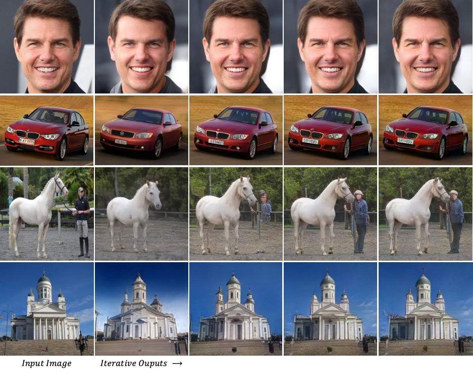
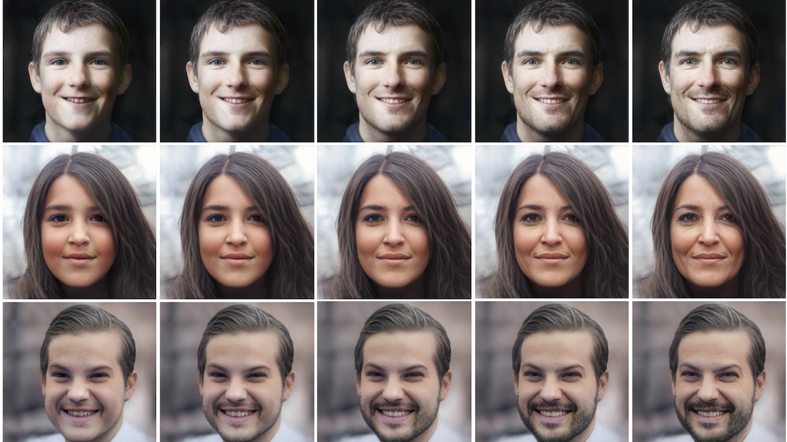
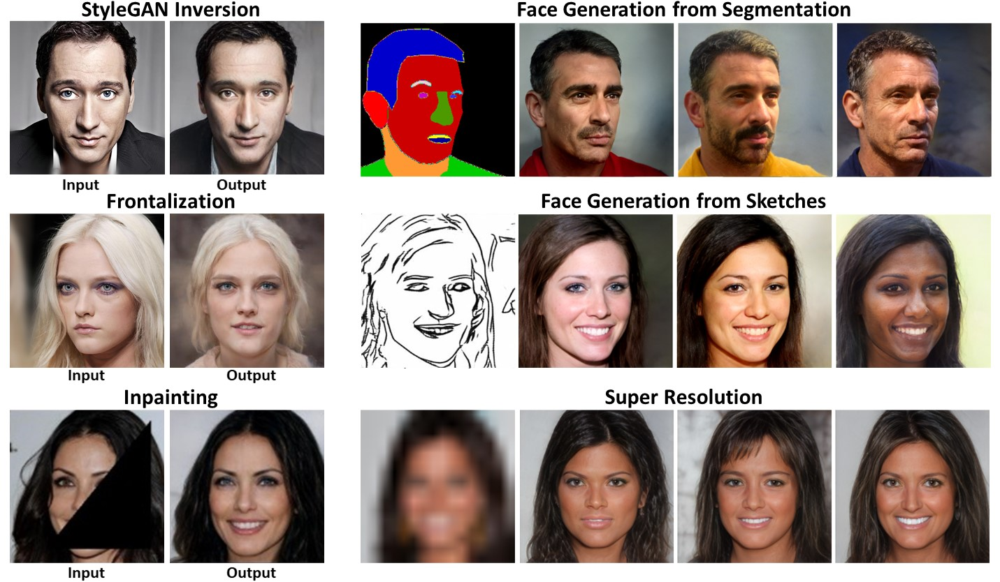

Yuval Alaluf
I'm an MSc student studying Computer Science at Tel-Aviv University under the supervision of Prof. Daniel Cohen-Or. I am particularly interested in Computer Vision and am currently working on research focusing on image generation and image manipulation.
Publications
-

-
Only a Matter of Style: Age Transformation Using a Style-Based Regression Model Paper Code Project Page
-
Encoding in Style: a StyleGAN Encoder for Image-to-Image Translation
Accepted CVPR 2021
Paper Code Project Page
Contact Me